04脚本Shell篇
走进shell
在Linux早起，还没有出现图形化，超哥和其他系统管理员都只能坐在电脑前，输入shell命令，查看控制台的文本输出。
在大多数Linux发行版里，例如centos，可以简单的用组合键来访问Linux控制台，也就是ctrl+F1~F7。
现在更多的使用xshell这样的控制终端，来连接管理我们的Linux机器。
以centos为例，默认的shell都是GNU bash shell，支持一些特性，例如
- man手册
- tab补全
- shell指令
GNU bash shell是在系统普通用户登陆时，作为普通程序运行，这个规则是/etc/passwd中指定的条目
[root@chaogelinux ~]# tail -1 /etc/passwd
susu:x:2009:2010::/home/susu:/bin/bash
bash会在用户登录时候自动启动，如果是虚拟控制台终端登录，`命令行界面（英語：Command-Line Interface，缩写：CLI）提示符会自动出现，此时可以输入shell命令。
或者是通过图形化桌面登录Linux系统，你就需要启动GNOME这样的图形化终端仿真器来访问shell CLI。
什么是shell
shell的作用是
- 解释执行用户输入的命令或程序等
- 用户输入一条命令，shell就解释一条
- 键盘输入命令，Linux给与响应的方式，称之为交互式
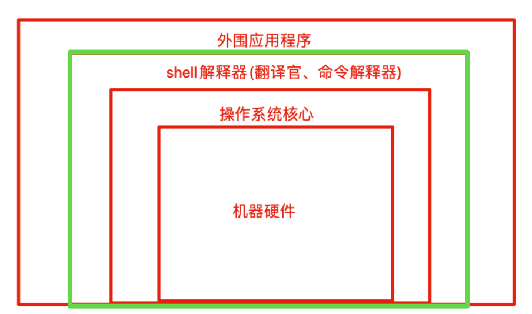
shell是一块包裹着系统核心的壳，处于操作系统的最外层，与用户直接对话，把用户的输入，解释给操作系统，然后处理操作系统的输出结果，输出到屏幕给与用户看到结果。
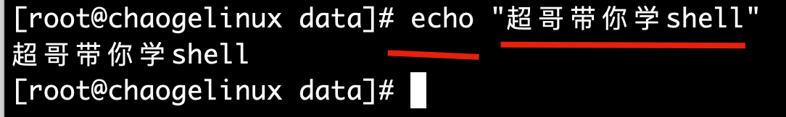
从我们登录Linux，输入账号密码到进入Linux交互式界面，所有的操作，都是交给shell解释并执行
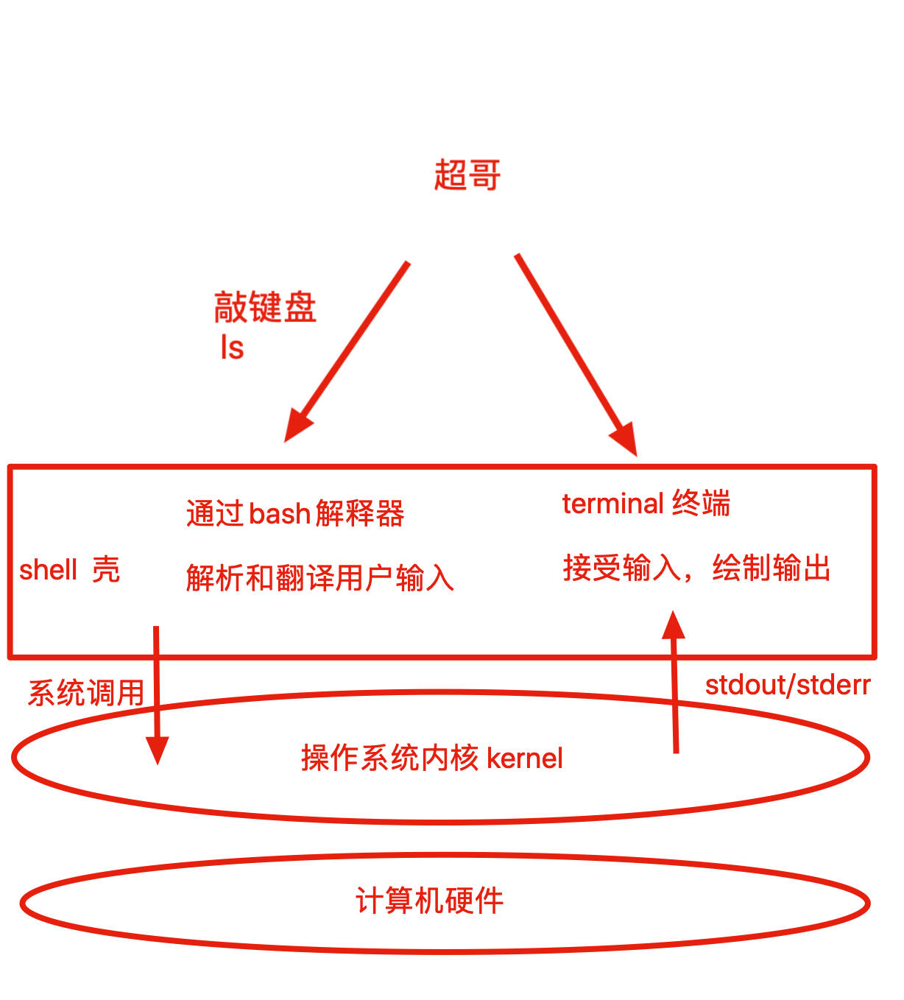
我们想要获取计算机的数据，不可能每次都编写程序，编译后，再运行，再得到我们想要的，例如你想找到一个文件，可以先写一段C语言的代码，然后调用系统函数，通过gcc编译后，运行程序才能找到文件。。。
因此有大牛开发出了shell解释器，能够让我们方便的使用Linux，例如只要敲下ls -lh这样的字符串，shell解释器就会针对这句话翻译，解释成ls -l -h 然后执行，通过终端输出结果，无论是图形化或是命令行界面。
即使我们用的图形化，点点点的动作，区别也只是
- 命令行操作，shell解释执行后，输出结果到黑屏命令行界面
- 图形化操作，shell接受点击动作，输出图案数据
shell和运维
shell脚本语言很适合处理纯文本类型数据，且Linux的哲学思想就是一切皆文件，如日志、配置文件、文本、网页文件，大多数都是纯文本类型的，因此shell可以方便的进行文本处理，好比强大的Linux三剑客（grep、sed、awk）
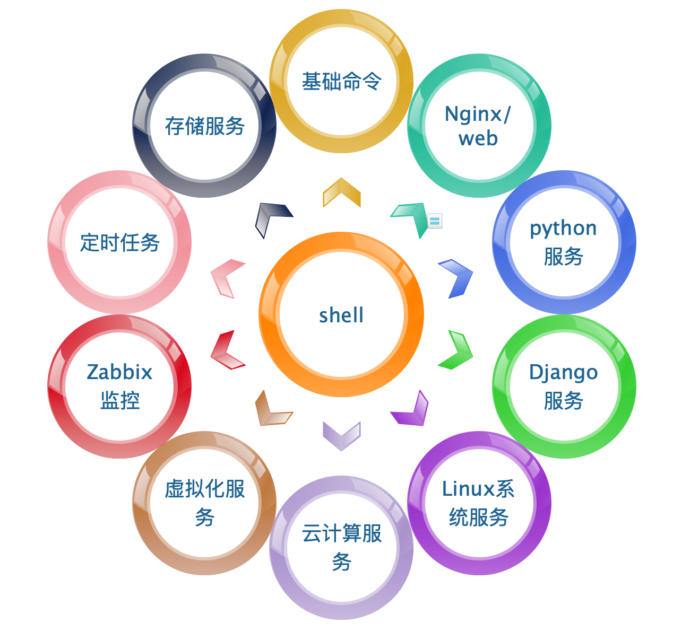
什么是shell脚本
当命令或者程序语句写在文件中，我们执行文件，读取其中的代码，这个程序文件就称之为shell脚本。
在shell脚本里定义多条Linux命令以及循环控制语句，然后将这些Linux命令一次性执行完毕，执行脚本文件的方式称之为，非交互式方式。
- windows中存在
*.bat批处理脚本 - Linux中常用
*.sh脚本文件
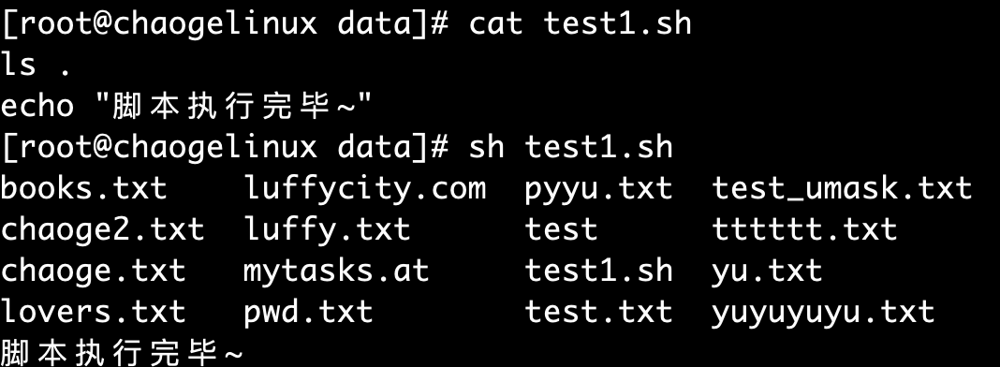
shell脚本规则
在Linux系统中，shell脚本或者称之为（bash shell程序）通常都是vim编辑，由Linux命令、bash shell指令、逻辑控制语句和注释信息组成。
Shebang（指定解释器）
计算机程序中，shebang指的是出现在文本文件的第一行前两个字符#!
在Unix系统中，程序会分析shebang后面的内容，作为解释器的指令，例如
- 以
#!/bin/sh开头的文件，程序在执行的时候会调用/bin/sh，也就是bash解释器 - 以
#!/usr/bin/python开头的文件，代表指定python解释器去执行 - 以
#!/usr/bin/env 解释器名称，是一种在不同平台上都能正确找到解释器的办法
注意事项：
- 如果脚本未指定
shebang，脚本执行的时候，默认用当前shell去解释脚本，即$SHELL - 如果
shebang指定了可执行的解释器，如/bin/bash /usr/bin/python，脚本在执行时，文件名会作为参数传递给解释器 - 如果#!指定的解释程序没有可执行权限，则会报错“bad interpreter: Permission denied”。
- 如果#!指定的解释程序不是一个可执行文件，那么指定的解释程序会被忽略，转而交给当前的SHELL去执行这个脚本。
- 如果#!指定的解释程序不存在，那么会报错“bad interpreter: No such file or directory”。
- #!之后的解释程序，需要写其绝对路径（如：#!/bin/bash），它是不会自动到$PATH中寻找解释器的。
- 如果你使用"bash test.sh"这样的命令来执行脚本，那么#!这一行将会被忽略掉，解释器当然是用命令行中显式指定的bash。
脚本案例
[root@chaogelinux data]# cat test.sh
#!/bin/bash
echo "超哥强呀，奥力给"
#!/bin/bash 这里就是注释的作用了
系统自带的bash脚本，开机启动脚本
[root@chaogelinux data]# head -1 /etc/rc.d/init.d/network
#! /bin/bash
脚本注释，脚本开发规范
- 在shell脚本中，#后面的内容代表注释掉的内容，提供给开发者或使用者观看，系统会忽略此行
- 注释可以单独写一行，也可以跟在命令后面
- 尽量保持爱写注释的习惯，便于以后回顾代码的含义，尽量使用英文、而非中文
#! /bin/bash
# Date : 2019-11-28 14:59:18
# Author：created by chaoge
# Blog：www.cnblogs.com/pyyu
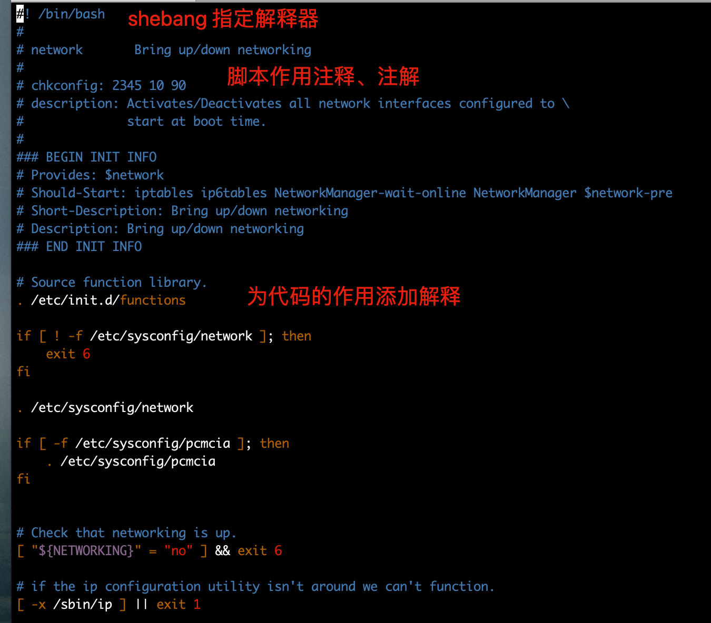
执行shell脚本的方式
bash script.sh或sh scripte.sh，文件本身没权限执行，没x权限，则使用的方法，或脚本未指定shebang，重点推荐的方式- 使用
绝对/相对路径执行脚本，需要文件含有x权限 source script.sh或者. script.sh，代表执行的含义，source等于点.- 少见的用法，
sh < script.sh
[root@chaogelinux data]# cat test.sh
#!/bin/bash
echo "超哥强呀，奥力给"
#!/bin/bash 这里就是注释的作用了
[root@chaogelinux data]#
[root@chaogelinux data]#
[root@chaogelinux data]# sh < test.sh
超哥强呀，奥力给
[root@chaogelinux data]# sh test.sh
超哥强呀，奥力给
[root@chaogelinux data]# bash test.sh
超哥强呀，奥力给
[root@chaogelinux data]# source test.sh
超哥强呀，奥力给
[root@chaogelinux data]# . /data/test.sh
超哥强呀，奥力给
权限不足
[root@chaogelinux data]# ./test.sh
-bash: ./test.sh: 权限不够
[root@chaogelinux data]# chmod +x test.sh
[root@chaogelinux data]# ./test.sh
超哥强呀，奥力给
脚本语言
shell脚本语言属于一种弱类型语言无需声明变量类型，直接定义使用
your_name="yuchao"
echo $your_name
echo ${your_name}
强类型语言，必须先定义变量类型，确定是数字、字符串等，之后再赋予同类型的值
package main
import "fmt"
func main() {
var a string = "Runoob"
fmt.Println(a)
var b, c int = 1, 2
fmt.Println(b, c)
}
centos支持哪些shell
centos7系统中支持的shell情况，有如下种类
[root@chaogelinux ~]# cat /etc/shells
/bin/sh
/bin/bash
/sbin/nologin
/usr/bin/sh
/usr/bin/bash
/usr/sbin/nologin
/bin/tcsh
/bin/csh
默认的sh解释器
[root@chaogelinux ~]# ll /usr/bin/sh
lrwxrwxrwx 1 root root 4 11月 16 10:48 /usr/bin/sh -> bash
其他脚本语言
- PHP是网页程序语言，专注于Web页面开发，诸多开源产品，wordpress、discuz开源产品都是PHP开发
- Perl语言，擅长支持强大的正则表达式，以及运维工具的开发
- Python语言，明星语言，不仅适用于脚本程序开发，也擅长Web页面开发，如（系统后台，资产管理平台），爬虫程序开发，大量Linux运维工具也由python开发，甚至于游戏开发也使用
shell的优势
虽然有诸多脚本编程语言，但是对于Linux操作系统内部应用而言，shell是最好的工具，Linux底层命令都支持shell语句，以及结合三剑客(grep、sed、awk)进行高级用法。
- 擅长系统管理脚本开发，如软件启停脚本、监控报警脚本、日志分析脚本
每个语言都有自己擅长的地方，扬长避短，达到高效运维的目的是最合适的。
#Linux默认shell
[root@chaogelinux ~]# echo $SHELL
/bin/bash
bash基础特性
bash有诸多方便的功能，有助于运维人员提升工作效率
命令历史
Shell会保留其会话中用户提交执行的命令
history #命令，查看历史命令记录，注意【包含文件中和内存中的历史记录】
[root@chaogelinux ~]# echo $HISTSIZE #shell进程可保留的命令历史的条数
3000
[root@chaogelinux ~]# echo $HISTFILE #存放历史命令的文件，用户退出登录后，持久化命令个数
/root/.bash_history
#存放历史命令的文件
[root@chaogelinux ~]# ls -a ~/.bash_history
/root/.bash_history
history命令
history #命令 以及参数
-c: 清空内存中命令历史；
-r：从文件中恢复历史命令
数字 ：显示最近n条命令 history 10
调用历史命令
!n #执行历史记录中的某n条命令
!! #执行上一次的命令，或者向上箭头
!string #执行名字以string开头的最近一次的命令
调用上一次命令的最后一个参数
ESC . #快捷键
!$
控制历史命令的环境变量
变量名：HISTCONTROL
ignoredups：忽略重复的命令；
ignorespace：忽略以空白字符开头的命令；
ignoreboth：以上两者同时生效；
[root@chaogelinux ~]# HISTCONTROL=ignoreboth
[root@chaogelinux ~]# echo $HISTCONTROL
ignoreboth
[root@chaogelinux ~]# history
bash特性汇总
- 文件路径tab键补全
- 命令补全
tab
- 快捷键ctrl + a,e,u,k,l
- Ctrl-A: 回到此行最前面
- Ctrl-E: 到此行的最後面
- Ctrl-U: 清除一行中游標之前的所有文字
- Ctrl-K: 清除一行字游標之後的所有文字
- ctrl-L ：清空画面
- ctrl-C：中断命令执行
- Ctrl-D：结束交互式输入，如python解释器下，如果是bash，则logout。
- 通配符
*
- 命令历史
history
- 命令别名
alias
- 命令行展开
{}花括号语法
变量含义
学生时代所学的数学方程式，如x=1,y=2，那会称之为x，y是未知数
对于计算机角度，x=1,y=2等于定义了两个变量，名字分别是x，y，且赋值了1和2
变量是暂时存储数据的地方，是一种数据标记（房间号，标记了客人所在的位置），数据存储在内容空间，通过调用正确的变量名字，即可取出对应的值。
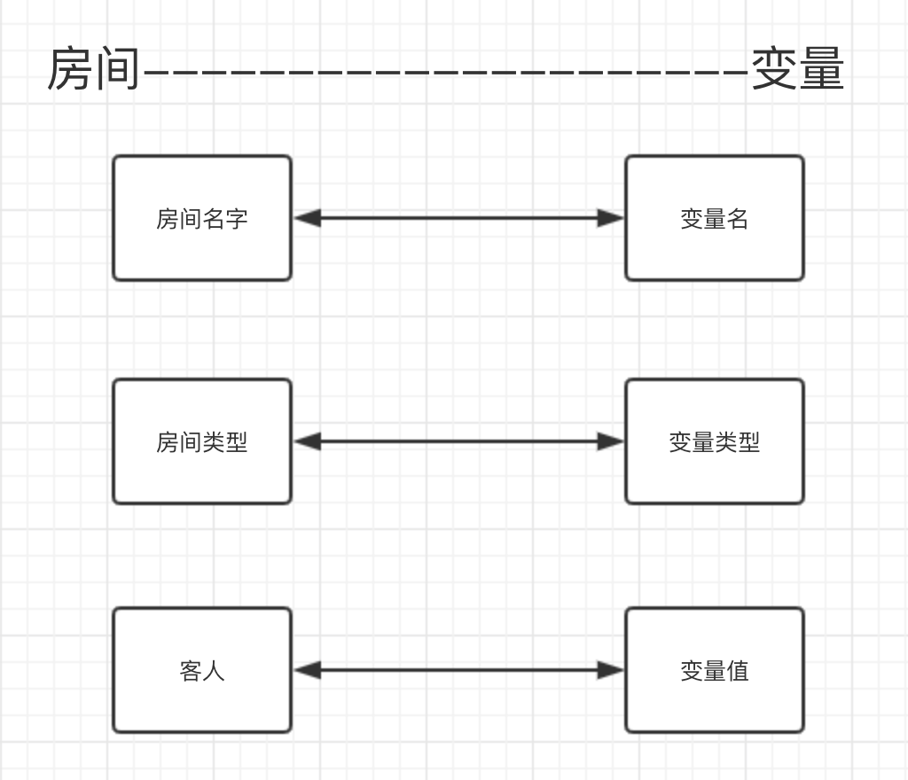
shell定义变量
变量定义与赋值
- 注意变量与值之间不得有空格
name="超哥"
变量名
变量类型，bash默认把所有变量都认为是字符串
bash变量是弱类型，无需事先声明类型，是将声明和赋值同时进行
变量替换/引用
[root@chaogelinux ~]# name="超哥带你学bash"
[root@chaogelinux ~]# echo ${name}
超哥带你学bash
[root@chaogelinux ~]# echo $name #可以省略花括号
超哥带你学bash
变量名规则
- 名称定义要做到见名知意，切按照规则来，切不得引用保留关键字(直接输入help检查系统保留字)
- 只能包含数字、字母、下划线
- 不能以数字开头
- 不能用标点符号
- 变量名严格区分大小写
有效的变量名：
NAME_CHAOGE
_chaoge
chaoge1
chaogE1
Chao2_ge
无效的变量名：
?chaoge
chao*ge
chao+ge
变量的种类
本地变量
只针对当前的shell进程
pstree检查进程树
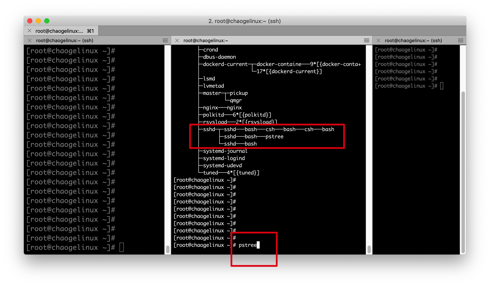
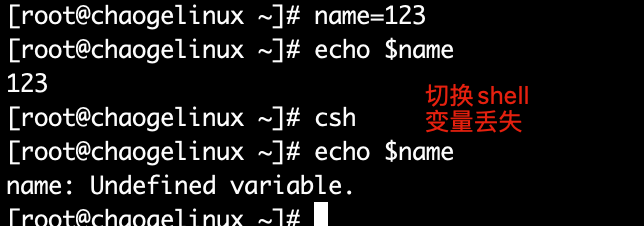
环境变量
也称为全局变量，针对当前shell以及其任意子进程，环境变量也分自定义、内置两种环境变量
- PATH变量就是系统内置的一种。
局部变量
针对在shell函数或是shell脚本中定义。
写在shell脚本里。
位置参数变量：用于
shell脚本中传递的参数- 就如同我们给命令传入参数，
touch /tmp/t1.txt /tmp/t2.txt
- 就如同我们给命令传入参数，
特殊变量：shell内置的特殊功效变量
- $?
- 0：成功
- 1-255：错误码
- $?
[root@yuanlai-0224 ~]# ls /opt
[root@yuanlai-0224 ~]#
[root@yuanlai-0224 ~]#
[root@yuanlai-0224 ~]# echo $?
0
[root@yuanlai-0224 ~]#
[root@yuanlai-0224 ~]# llll
-bash: llll: command not found
[root@yuanlai-0224 ~]#
[root@yuanlai-0224 ~]# echo $?
127
自定义变量
- 变量赋值：
varName=value 变量引用：
${varName}、$varName- 双引号，变量名会替换为变量值
[root@yuanlai-0224 ~]# name='于超老师'
[root@yuanlai-0224 ~]#
[root@yuanlai-0224 ~]#
[root@yuanlai-0224 ~]# my_address='北京昌平沙河'
[root@yuanlai-0224 ~]#
[root@yuanlai-0224 ~]# echo "我的名字是${name}，我的地址是${my_address}"
我的名字是于超老师，我的地址是北京昌平沙河
[root@yuanlai-0224 ~]#
不同的执行方式，不同的shell环境（难题）
这里使用不同的执行方式，运行一个shell脚本。
[root@chaogelinux data]# echo user1='超哥' > testsource.sh
[root@chaogelinux data]# echo $user1
[root@chaogelinux data]# sh testsource.sh
[root@chaogelinux data]# echo $user1
[root@chaogelinux data]# source testsource.sh
[root@chaogelinux data]# echo $user1
超哥
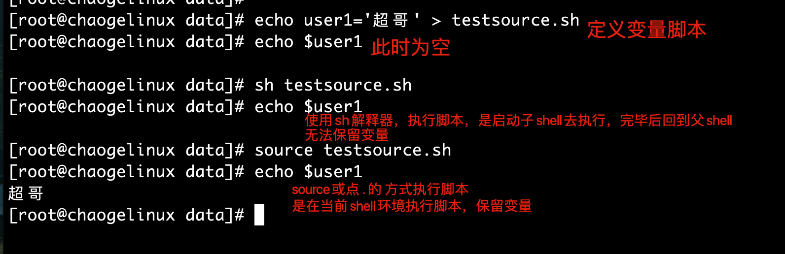
解答
1.每次调用bash都会开启一个子shell，因此不保留当前的shell变量，通过pstree命令检查进程树
2.调用source是在当前shell环境加载脚本，因此保留变量
shell变量面试题
问，如下输入什么内容
[root@chaogelinux data]# cat test.sh
user1=`whoami`
[root@chaogelinux data]# sh test.sh
[root@chaogelinux data]# echo $user1
A.当前用户
B.超哥
C.空
什么是环境变量
- 环境变量只是一个总称，代表了系统变量和用户变量，因此我们说环境变量都是指的系统变量和用户变量。
- 系统变量就是系统级别的变量，用户需要使用系统变量。
- 如果系统变量被修改了，而任何系统用户都在用系统变量，因此每个系统用户都将受到影响。
- 用户变量运行在系统变量之上的，每个用户拥有不同的用户变量，不同用户的用户变量之间是并列的，也是互不干扰的。他们之间的关系图如下如所示
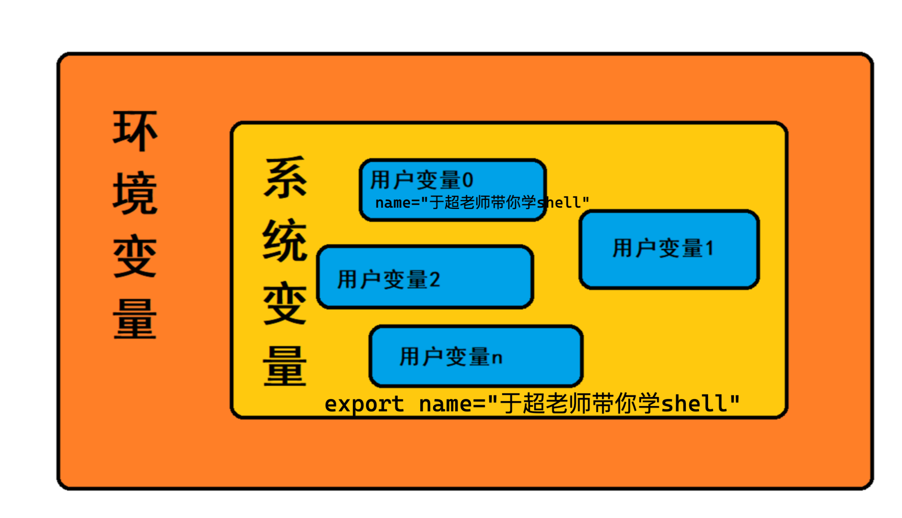
环境变量设置
所谓环境变量，就是给系统添加新的变量。
环境变量一般指的是用export内置命令导出的变量，用于定义shell的运行环境、保证shell命令的正确执行。
shell通过环境变量确定登录的用户名、PATH路径、命令提示符等各种应用。
[root@yuanlai-0224 ~]# echo $USER
root
[root@yuanlai-0224 ~]# echo $PATH
/usr/local/mysql/bin/:/usr/local/sbin:/usr/local/bin:/usr/sbin:/usr/bin:/root/bin
环境变量可以在命令行中临时创建，但是用户退出shell终端，变量即丢失，如要永久生效，需要修改环境变量配置文件
- 用户个人配置文件
~/.bash_profile、~/.bashrc 远程登录用户特有文件 - 全局配置文件
/etc/profile、/etc/bashrc，且系统建议最好创建在/etc/profile.d/，而非直接修改主文件，修改全局配置文件，影响所有登录系统的用户
shell变量分类（关于父子shell）
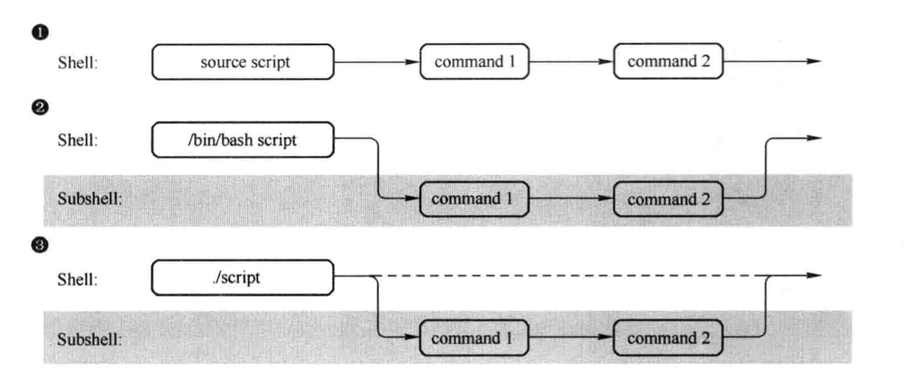
父shell
父shell：我们在登录某个虚拟机控制器终端的时候(连接某一个linux虚拟机)时，默认启动的交互式shell，然后等待命令输入。
可以使用ps查看进程去查看父子shell关系
- ps命令参数，是否有横杠的参数作用是不一样的
-f 显示UID,PPID,C与STIME栏位。
f 用ASCII字符显示树状结构，表达进程间的相互关系。
-e 此参数的效果和指定"A"参数相同。
e 列出进程时，显示每个进程所使用的环境变量。
--forest 此参数的效果和指定"f"参数相同。
使用ps命令，查看shell关系
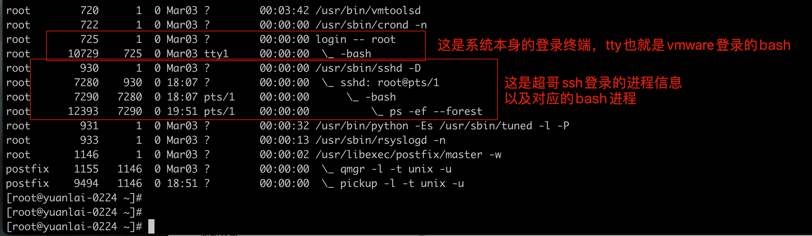
子shell
当在CLI的提示符下，输入/bin/bash指令，或者其他bash指令，会创建一个新的shell程序，这就被称之为子shell（child shell）
子shell同样的拥有CLI提示符，可以输入命令。
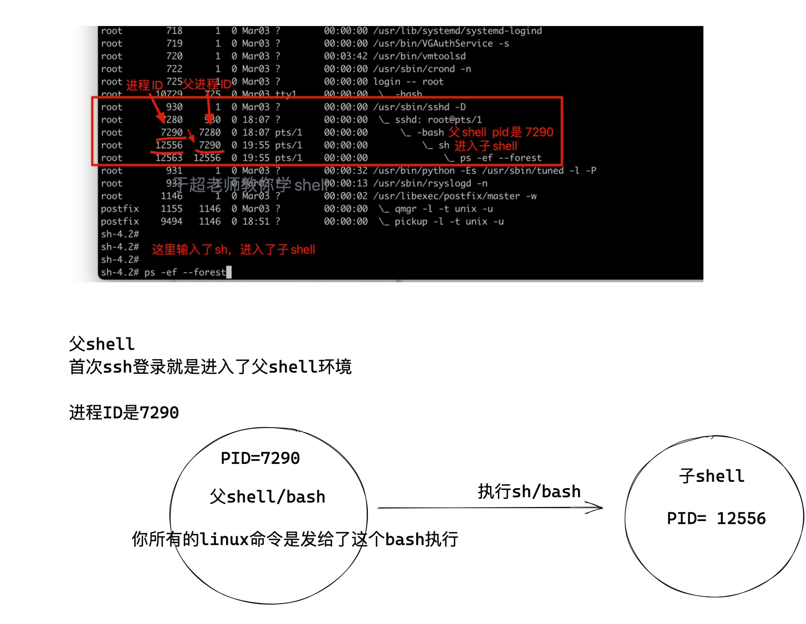
你也可以多次执行bash，进入多个子shell环境，如。
多个子shell
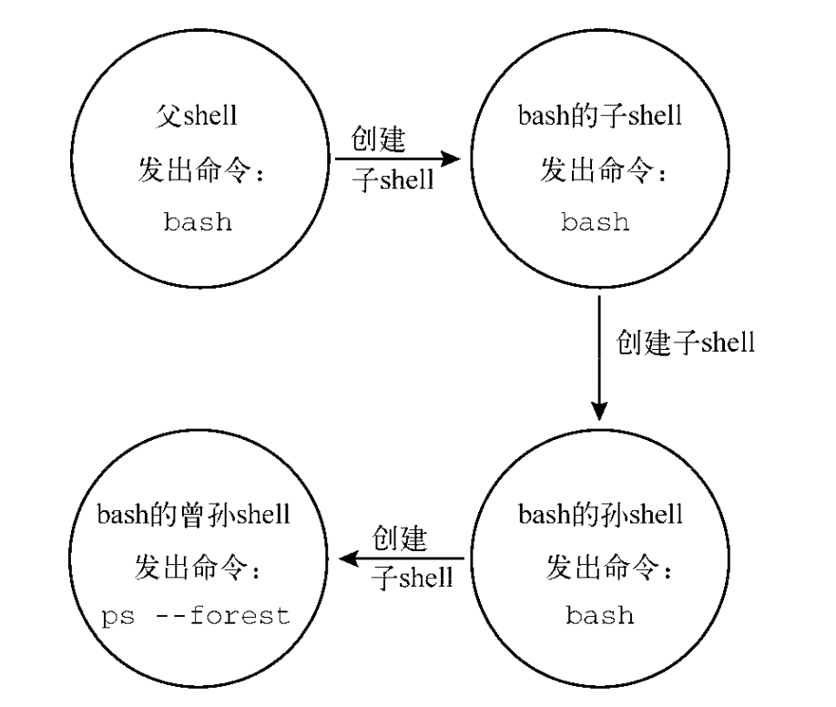
退出子shell
exit 可以退出子shell，也可以退出当前的虚拟控制台终端。
只需要在父shell里输入exit就可以退出了。
当前用户的私有变量
只针对当前登录用户生效的变量。
通过变量赋值语句，定义好的变量
name='于超老师带你学shell'
my_age="18"
系统环境变量
系统环境变量，对所有系统中的用户都生效。
1.首先，系统自身存在环境变量，通过env查看
2.用户可以通过export命令，将用户私有变量，导出为用户私有环境变量
export name='于超老师带你学shell'
3.导出后的用户环境变量，进入子shell也依然可以用。
检查系统环境变量的命令（了解）
- set，显示当前shell进程的本地变量，本地变量只对当前shell进程有效，不会被子进程传递。（子shell找不到）
定义本地变量
[root@yuanlai-0224 ~]# name='于超老师带你学shell'
[root@yuanlai-0224 ~]# echo $name
于超老师带你学shell
[root@yuanlai-0224 ~]#
[root@yuanlai-0224 ~]# bash
[root@yuanlai-0224 ~]# echo $name
[root@yuanlai-0224 ~]#
- env，显示当前用户，默认的环境变量，也是为子shell提供的环境变量。（子shell找得到）
[root@yuanlai-0224 ~]# env |wc -l
22
[root@yuanlai-0224 ~]#
[root@yuanlai-0224 ~]# bash
[root@yuanlai-0224 ~]#
[root@yuanlai-0224 ~]# env|wc -l
22
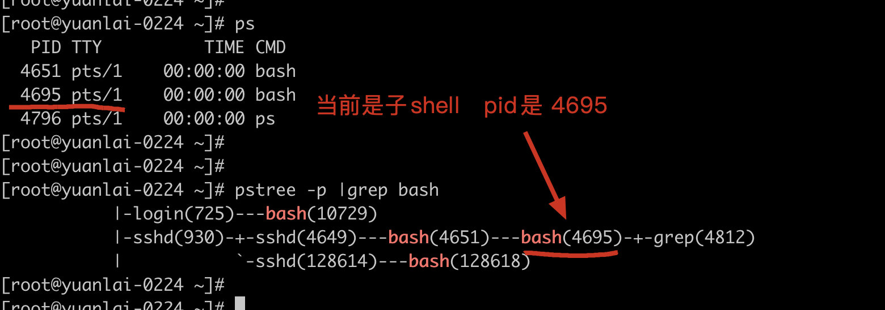
- export，显示以及设置用户的环境变量（系统变量+用户变量）
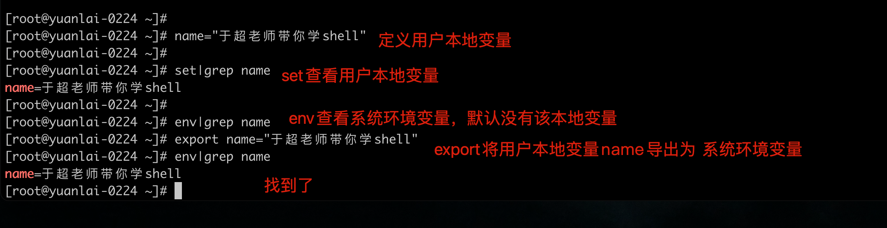
- declare，显示和设置环境变量（系统变量+用户变量），与set命令功能一样，对shell环境变量进行显示、设置
declare -x 设置变量为环境变量,同export命令功能相同
export直接看到的变量赋值过程，就是declare在定义。
- source
语法
source filename
作用
在当前shell环境下，读取且执行filename中的命令，也可以用 点 "." 替代。
source命令，通常用于执行刚修改的配置文件，如.bash_profile或是/etc/profile
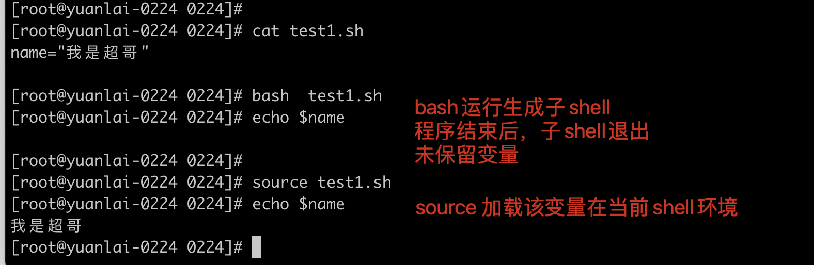
总结
- 用户可以直接定义，用户私有变量，
name='超哥666'，子shell看不到该变量，当前shell结束时变量消失。 - 用户可以通过export命令，修改私有变量为系统变量，子shell可以看到该变量，shell结束时变量消失。
./test1.sh直接运行脚本，是生成子shell运行该脚本。- source运行脚本，是在当前shell环境下（父shell）直接运行，能够影响到当前shell的环境变量。（set可见该变量）
撤销变量/只读变量
- unset 变量名，删除变量或函数。
设置只读变量
- readonly ，只有shell结束，只读变量失效
直接readonly 显示当前系统只读变量
[root@chaogelinux ~]# readonly name="超哥"
[root@chaogelinux ~]# name="chaochao"
-bash: name: 只读变量
系统保留关键字
bash保留了很多环境变量关键字，用于定义bash的运行环境信息。
[root@yuanlai-0224 0224]# export |awk -F '[ :=]' '{print $3}'
HISTCONTROL
HISTSIZE
HOME
HOSTNAME
LANG
LC_ALL
LESSOPEN
LOGNAME
LS_COLORS
MAIL
OLDPWD
PATH
PWD
SHELL
SHLVL
SSH_CLIENT
SSH_CONNECTION
SSH_TTY
TERM
USER
XDG_RUNTIME_DIR
XDG_SESSION_ID
[root@yuanlai-0224 0224]#
系统常用环境变量
BASH Bash Shell的全路径
CDPATH 用于快速进入某个目录。
PATH 决定了shell将到哪些目录中寻找命令或程序
HOME 当前用户主目录
HISTSIZE 历史记录数
LOGNAME 当前用户的登录名
HOSTNAME 指主机的名称
SHELL 当前用户Shell类型
LANGUGE 语言相关的环境变量，多语言可以修改此环境变量
MAIL 当前用户的邮件存放目录
PS1 基本提示符，对于root用户是#，对于普通用户是$
bash一行多条命令
[root@yuanlai-0224 ~]# cd ;pwd;ls /var/log/;cd;pwd
linux提供的环境变量相关文件
bash会在用户登录时，读取下列四个环境配置文件：
全局环境变量设置文件：/etc/profile、/etc/bashrc。
用户环境变量设置文件：~/.bash_profile、~/.bashrc。
读取顺序：① /etc/profile、② ~/.bash_profile、③ ~/.bashrc、④ /etc/bashrc。
① /etc/profile：此文件为系统的每个用户设置环境信息，系统中每个用户登录时都要执行这个脚本，如果系统管理员希望某个设置对所有用户都生效，可以写在这个脚本里，该文件也会从/etc/profile.d目录中的配置文件中搜集shell的设置。
② ~/.bash_profile：每个用户都可使用该文件设置专用于自己的shell信息，当用户登录时，该文件仅执行一次。默认情况下，他设置一些环境变量，执行用户的.bashrc文件。
③ ~/.bashrc：该文件包含专用于自己的shell信息，当登录时以及每次打开新shell时，该文件被读取。
④ /etc/bashrc：为每一个运行bash shell的用户执行此文件，当bash shell被打开时，该文件被读取。
环境变量初始化与加载顺序
/etc/profile
全局（公有）配置，不管是哪个用户，登录时都会读取该文件，可以在这设置全局的环境变量。
/etc/bashrc
设置系统默认的一些功能和别名，尽量别动这个。
用户个人相关的环境变量文件
~/.bash_profile ，从文件可知，它会去读取~/.bashrc
[root@yuanlai-0224 ~]# cat ~/.bash_profile
# .bash_profile
# Get the aliases and functions
if [ -f ~/.bashrc ]; then
. ~/.bashrc
fi
# User specific environment and startup programs
PATH=$PATH:$HOME/bin
export PATH
~/.bashrc 可见设置了一些别名之类的，以及又去读取了系统全局的/etc/bashrc环境变量配置。
[root@yuanlai-0224 ~]# cat ~/.bashrc
# .bashrc
# User specific aliases and functions
alias rm='rm -i'
alias cp='cp -i'
alias mv='mv -i'
# Source global definitions
if [ -f /etc/bashrc ]; then
. /etc/bashrc
fi
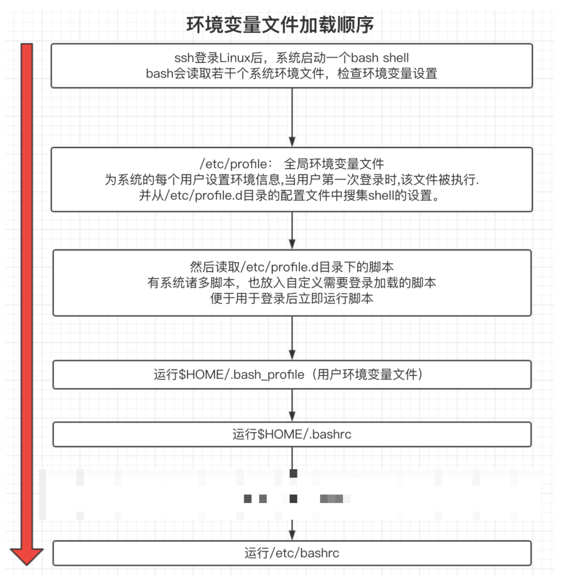
环境变量总结
- 需要修改关于个人的一些变量添加，每次登录都启用，写入
~/.bash_profile - 需要设置全局的环境变量，每次登录都启用，写入
/etc/profile或者/etc/profile.d/
[root@yuanlai-0224 ~]# ls /etc/profile.d/
256term.csh colorgrep.csh colorls.csh csh.local lang.sh less.sh vim.csh which2.csh
256term.sh colorgrep.sh colorls.sh lang.csh less.csh sh.local vim.sh which2.sh
进程列表（用子shell执行程序）
多进程的概念
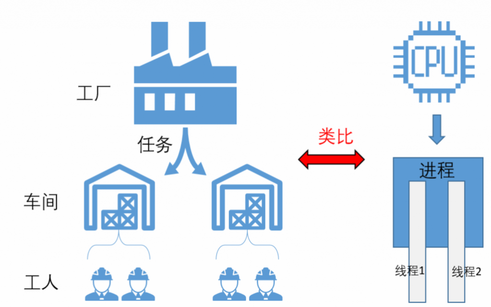
shell多进程（创建子shell）
若是超哥想要执行一系列的命令，可以通过命令列表来实现，如下
[root@chaogelinux ~]# pwd;ls;cd /opt;pwd;ls
这样的写法，命令的确会依次执行，但是这并不是【进程列表】
必须如下写法才是
[root@chaogelinux opt]# (cd ~;pwd;ls ;cd /tmp;pwd;ls)
命令列表，必须写入括号里，进程列表是生成子shell去执行对应的命令。
进程列表的语法就是如上
(command1;command2)
后台执行和子shell
一个高效的zishell是和后台结合使用。
我们使用sleep命令，来测试子shell。
sleep 3
sleep将你会话暂停3秒，然后返回shell
不希望sleep卡住会话，将它放在后台运行。
[root@yuanlai-0224 0224]# (sleep 300) &
[1] 28827
显示的是后台作业的id号（background job 1），以及后台进程的PID 28827
查看父子shell进程数
[root@yuanlai-0224 0224]# sleep 300 &
[1] 28926
[root@yuanlai-0224 0224]#
[root@yuanlai-0224 0224]# ps -f --forest
UID PID PPID C STIME TTY TIME CMD
root 7290 7280 0 18:07 pts/1 00:00:00 -bash
root 12556 7290 0 19:55 pts/1 00:00:00 \_ sh
root 12939 12556 0 20:02 pts/1 00:00:00 \_ bash
root 28926 12939 0 20:25 pts/1 00:00:00 \_ sleep 300
root 28928 12939 0 20:25 pts/1 00:00:00 \_ ps -f --forest
jobs命令
可以通过jobs命令，查看后台任务
[root@yuanlai-0224 0224]# jobs -l
[1]+ 29040 Running ( sleep 300 ) &
可以输入 fg命令，将后台任务，放入前台运行，或者中断期操作。
这样使用子shell，目的是为了，使用子shell，开辟子进程，处理耗时的工作，放入后台，比如你有一个压缩包，非常大，直接tar命令解压缩，占用窗口，你可以使用子shell去解压缩。
子shell多进程实战（ip存活检测）
普通单进程版本
[root@yuanlai-0224 0224]# cat test1.sh
#!/bin/bash
net=192.168.0.
ip=0
while [ $ip -lt 250 ]
do
let ip++
sleep 0.5
if `ping -c2 -i0.2 -w2 $net$ip &>/dev/null`
then echo "$net$ip is up"
else
echo "$net$ip is down"
fi
done
echo "end"
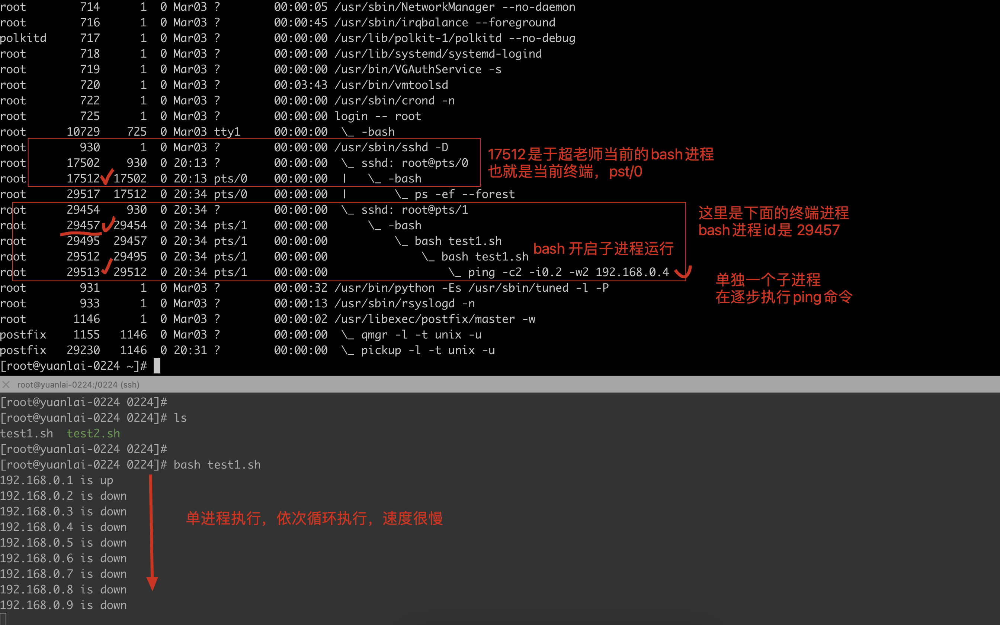
多进程高效版
[root@yuanlai-0224 0224]# cat test2.sh
#!/bin/bash
net=192.168.0.
for((i=1;i<201;i++))
do
{
sleep 0.5
if `ping -c2 -i0.2 -w2 $net$i &>/dev/null`
then echo "$net$i is up "
else
echo "$net$i is down"
fi
}&
done
wait
echo "end"
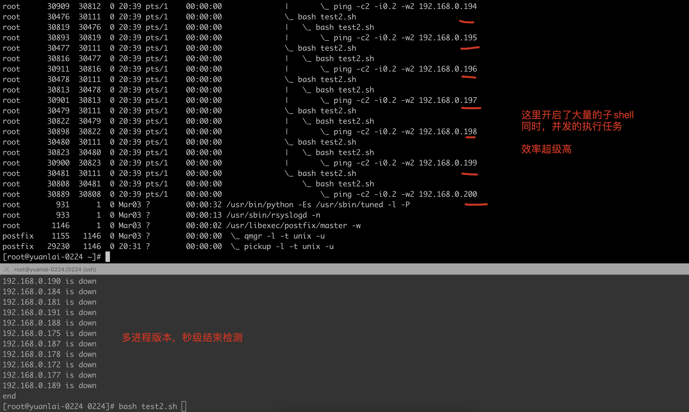